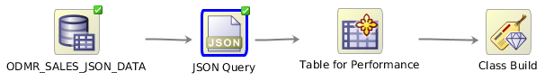
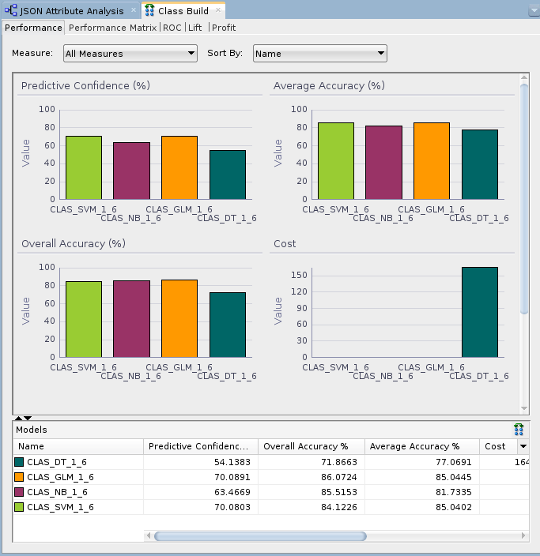
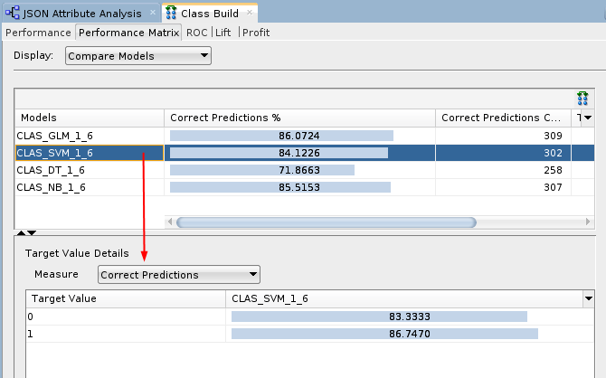
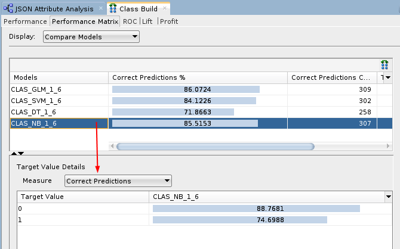
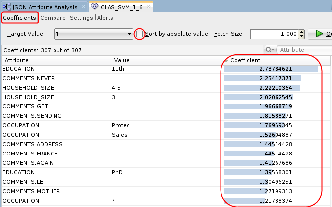

Build
JSON Data Classification Models and Analyze the Results
Build
JSON Data Classification Models and Analyze the Results Before You Begin
Before You Begin
This 15-minute tutorial shows you how to build classification models against structured JSON data and examine the model results.
Background
JSON is a popular lightweight data structure commonly used by Big Data. For example, web logs generated in the middle tier web servers are likely in JSON format. NoSQL database vendors have chosen JSON as their primary data representation. Moreover, the JSON format is widely used in the RESTful style Web services responses generated by most popular social media websites like Facebook, Twitter, LinkedIn, etc. This JSON data could potentially contain a wealth of information that is valuable for business use.
Oracle Database provides ability to store and query JSON data. To take advantage of the database JSON support, Oracle Data Miner provides a JSON Query node that allows users to query JSON data as a relational format.
What Do You Need?
- Oracle Database 19c Enterprise Edition
- Oracle SQL Developer version 19.x
- Oracle Data Miner User Account
- JSON Data Workflow
 Add a
Classification Node
Add a
Classification Node
- Expand the Models category in the Components tab. Then drag and drop the Classification node to the Workflow pane.
- Connect the Table for Performance node to the Class Build node.
- In the Build tab of the Edit Classification Build Node
window:
- Select AFFINITY_CARD as the Target attribute, and CUST_ID as the Case ID attribute.
- Click OK to save these settings and close the Edit Classification Build Node window.

Description of the illustration json-workflow.png
 Build
and Compare Models
Build
and Compare Models
- Right-click the Class Build node and select Run from the menu.
- Right-click the Class Build node and select Compare
Test Results from the menu.

Description of the illustration compare-test-results.png The results show that the Naive Bayes and SVM models produce a higher degree of Predictive Confidence, Average Accuracy, and Overall Accuracy than the other two model types. (Your Test Results may vary slightly in all cases.)
- Select the Performance Matrix tab and
perform the following:
- Select the SVM model.

Description of the illustration svm-model.png For the selected model in the upper pane, target value details are provided in the lower pane. The correct prediction % for the Target Value of "1" ("Yes" on the Affinity Card) is 86.74% for the SVM model.
- Select the NB model.

Description of the illustration nb-model.png The correct prediction % for the Target Value of "1" ("Yes" on the Affinity Card) is 74.69% for the NB model.
- Select the SVM model.
- Close the Class Build window.
- Right-click the Class Build node and select View
Models > CLAS_SVM_1_#.

Description of the illustration svm-model2.png Conclusion: The SVM model indicates that the EDUCATION and HOUSEHOLD_SIZE attributes are the most significant contributors to the prediction. Notice that four of the top five predictive attributes are these two.
- Dismiss the Decision Tree display tab and close the workflow.